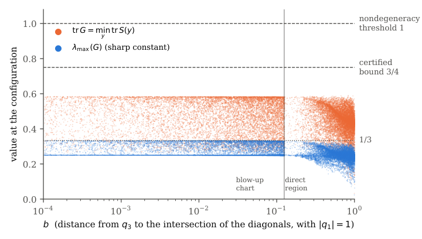

The Hessian lower bound and uniqueness theorem for four-body convex central configurations, including the interval-arithmetic computation, are formalized and kernel-checked in Lean.
Abstract
We prove that for every choice of four positive masses and every cyclic ordering of the bodies there is exactly one strictly convex planar central configuration with that ordering, up to similarity. This answers Problem 10 in the list of Albouy, Cabral and Santos, which Santoprete calls the Simó-Yoccoz conjecture. The main step is a uniform lower bound for the Hessian at convex central configurations: it is at least one quarter of its radial part, which vanishes only on translations and rotations. Dziobek's relations turn the indefinite part of the Hessian into a negative multiple of a square, and a Cauchy-Schwarz argument bounds this term by the radial part times the trace of an explicit $2\times 2$ matrix in which the masses do not appear. We prove that this trace is less than 3/4 by interval arithmetic on the three-dimensional set of normalized convex central configurations, in the coordinates of Corbera, Cors and Roberts. Uniqueness then follows by a covering argument from the case of four equal masses. The computation has been repeated with a second, independently written program. The Hessian bound and the uniqueness theorem, including the computation, have been formalized in the Lean proof assistant and checked by its kernel, using only the standard axioms. As consequences, every degenerate four-body central configuration is concave, the convex central configuration depends analytically on the masses, and the known symmetry theorems for kites, isosceles trapezoids and rhombi follow in a few lines. The analytic dependence and the symmetry theorems are also formalized.
Problem
Whether, for every choice of four positive masses and each cyclic ordering, there is exactly one strictly convex planar central configuration up to similarity (the Simó-Yoccoz conjecture, Problem 10 of Albouy-Cabral-Santos).
Approach
A uniform lower bound Q >= (1/4)K for the Hessian at convex central configurations is derived using Dziobek's relations and a Cauchy-Schwarz argument that reduces the indefinite part to a negative multiple of a square, bounded by the trace of an explicit mass-free 2x2 matrix. This trace is shown to be less than 3/4 by rigorous interval arithmetic over the three-dimensional set of normalized convex configurations in Corbera-Cors-Roberts coordinates. Uniqueness follows via a covering argument from the equal-mass case. The Hessian bound, uniqueness theorem, and computation are formalized and checked by the Lean proof assistant's kernel using only standard axioms.
Results
Existence and uniqueness of the strictly convex central configuration is proved for all positive masses and cyclic orderings. Consequences include that every degenerate four-body central configuration is concave, analytic dependence on masses, and short proofs of kite, isosceles-trapezoid, and rhombus symmetry theorems, several also formalized in Lean.

Figure 1. The quantities \tr G=\min_{y}\tr S(y) (orange) and \lambda_{\max}(G) (blue) at 21\,985 sampled normalized convex CCs, plotted against the coordinate b on a logarithmic scale (floating point; an illustration, not part of the proof). The vertical line at b=\frac{1}{8} separates the direct region from the blow-up chart. The horizontal lines mark the nondegeneracy threshold 1 , the certified